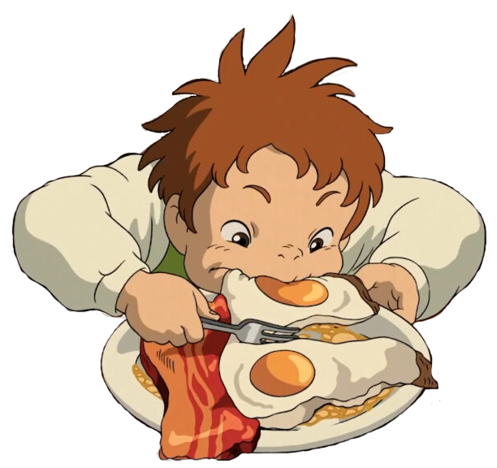

Tocino y Huevos
Ingredientes
- Tocino
- Huevos
- Pan
- Queso cheeddar blanco
Instrucciones
-
Calienta tu sartén hasta que esté caliente y coloca las rebanadas de tocino. Cocine hasta
que
esté crujiente, aproximadamente de 10 a 15 minutos. Voltear hasta la mitad.
-
Luego, dejando la grasa del tocino en la sartén, agrega los huevos. Cocine a su preferencia.
-
Coloque el tocino sobre toallas de papel sobre un plato para absorber un poco de grasa.
Escurre
el exceso de grasa en un frasco.
-
Corta tus rebanadas de pan.
-
Luego, agregue las rebanadas de pan a la sartén y ase ligeramente durante aproximadamente 2
a 4
minutos, volteándolas a la mitad.
-
¡Pon tu desayuno en un plato y luego disfrútalo!
